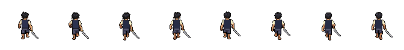

Carregando camadas…
Comparar com o movimento original
Corpos e movimentos foram reutilizados. Os quatro primeiros frames de cabelo norte foram preservados; somente os quatro defeituosos foram corrigidos. A roupa tem uma camada real por pose. Não há frames duplicados, espelhamento ou escala na montagem.

Cobertura: Idle nas quatro direções e caminhada de frente e de costas. Os dois perfis de caminhada e todos os ataques continuam usando o renderizador existente. Este pacote é de inspeção e não ativa um personagem incompleto na aventura.
Passos a 8 FPS, sem espelhamento, duplicação ou interpolação. A espada original acompanha encaixes reais da mão, atrás do corpo. Roupa e cabelo possuem oito camadas próprias.
Ver caminhada de costas em GIF · Pacote de inspeção · Relatório